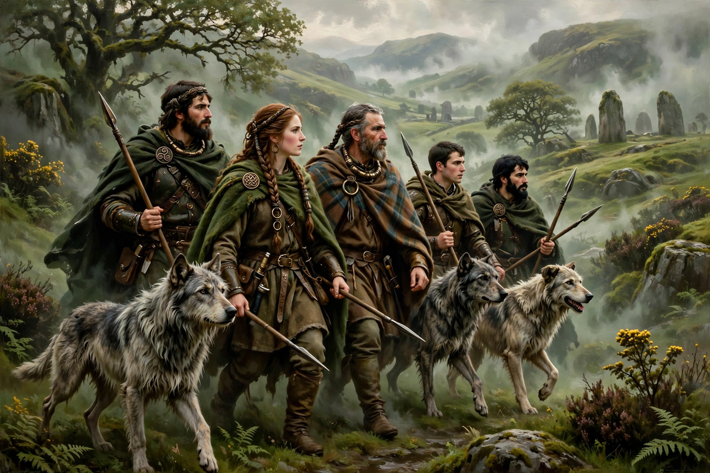

Fianna
The Fianna (singular Fian; Irish: Féinne) were small, semi-independent warrior bands in Irish mythology and early Irish society. They appear most prominently in the Fenian Cycle of tales, where the Fianna are led by the hero Fionn mac Cumhaill (Finn McCool) and include his son Oisín, the strongman Oscar, the swift Caílte, and the treacherous Goll mac Morna.

| Type | Warrior band |
|---|---|
| Region | Ireland |
| Most famous leader | Fionn mac Cumhaill |
| Principal sources | Acallam na Senórach, Fenian Cycle lays and tales |
| Era | Mythological; tales set c. 3rd century AD |
Admission tests
According to the tales, membership in the Fianna was hard won. A candidate had to pass a series of demanding physical and poetic tests: standing waist-deep in a pit, he had to defend himself with only a shield and a hazel stick against nine warriors casting spears simultaneously, without suffering a wound. He had to run through a forest without breaking a twig underfoot, without his hair becoming dishevelled, and without cracking a dry stick; he had to leap a pole as high as his forehead and run stooped under one as low as his knee. He was also required to be versed in the lore of poetry and to take oaths never to refuse hospitality, never to take a wife for her dowry, and to avenge insults to the band.
The Fenian Cycle
The stories of Fionn and the Fianna form one of the four major cycles of Irish mythology, alongside the Mythological Cycle, the Ulster Cycle, and the Cycles of the Kings. Many tales are framed as the aged Oisín and Caílte recounting the deeds of the Fianna to Saint Patrick in the twelfth-century compilation Acallam na Senórach ("Colloquy of the Ancients"). The cycle is known in Scotland as the tales of the Fèinne, and it inspired James Macpherson's Ossian poems in the eighteenth century.
Historical background
Historians note that fían bands of landless young men — often younger sons without inheritance — engaged in hunting, raiding, and mercenary service existed in early medieval Ireland outside the normal tribal structure. Some scholars connect the Fianna to similar institutions among other Indo-European peoples, such as bands of youthful warriors living at the margins of society.
See also
References
- Dooley, Ann; Roe, Harry (trans.), Tales of the Elders of Ireland, Oxford University Press, 1999.
- Nagy, Joseph Falaky, The Wisdom of the Outlaw: The Boyhood Deeds of Finn in Gaelic Narrative Tradition, 1985.